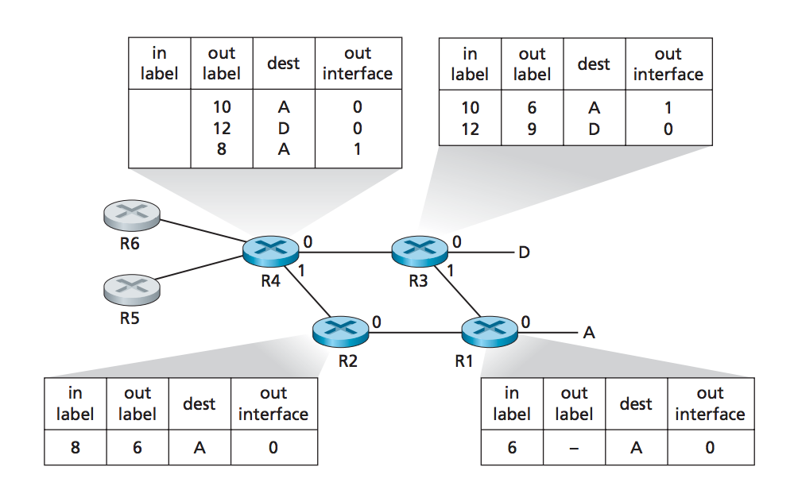

A link-layer frame transmitted between MPLS-capable devices has a small MPLS header added
between the Ethernet header and the IP header. An MPLS-capable router is referred to as a
label-switched router. It forwards an MPLS frame with the MPLS
label in its forwarding table and immediately passes the datagram to the
appropriate output interface.
A network operator can override normal IP routing and force traffic headed toward a given destination along
one path, and differenttraffic headed toward the same destination along another path (for whatever reason).
R1 through R4 are MPLS capable. R5 and R6 are standard IP routers

An ISP uses its MPLS-enabled network to connect the customer's various networks together.
MPLS can be used to isolate both
the resources and addressing used by the
customer's VPN from that of other users crossing the ISP's network.